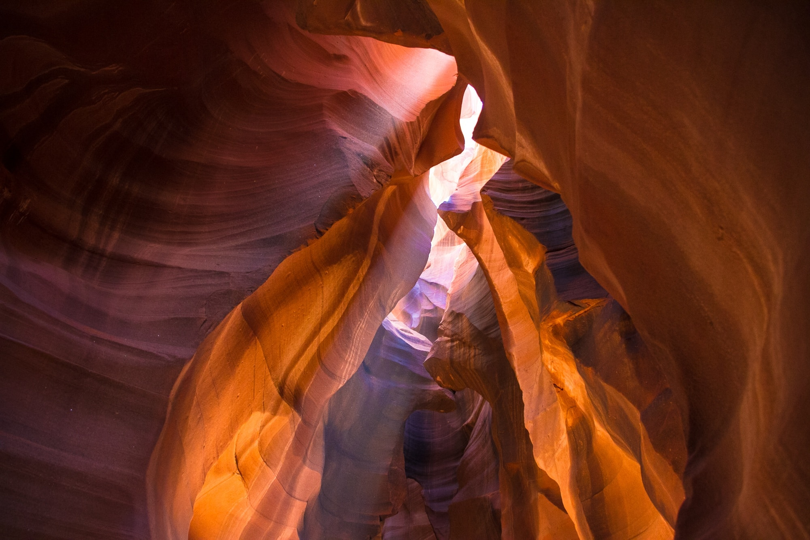

「いきる」と 「つくる」が めぐる社会へ
生きるために作り、作ることで生きる。 そんな好循環が持続する、 いきいきとした暮らしを実現したい。
そんな風に誰もが皆、 自分たちの力で、身近な資源を用いて、 理想の環境を作れるようになれば、 持続可能で幸福な社会が築けると信じています。
-

- 自然の世界
- イ）天地万物が存在する範囲。 ロ）人間以外の、人間を取り巻く世界。 ハ）人間界・生物界以外の世界
-

- 私の「自然」観
- 人間は自然界の中に置かれている存在の一つである。 まず、この厳粛な事実の前に謙虚であるべきではないか？
-
- 私の“自然科学”の定義
- 人間は考える“葦”である（パスカル） 1）自分は何者か？ 2）相手（自分以外）＝自然界は何者か？
-

- 私の“自然科学”の定義
- 「自然の中に現存する人間が、自然界という相手を認識する営みである」 それは人間の本来的欲求に基ずく行為だ。 自然科学という学問は、狭義には人間が自然界における未知の現象を解き明かし、既知の自然像をより鮮明に、より精密に、より広くする人間の営み。 本来は全ての人間の業だ。